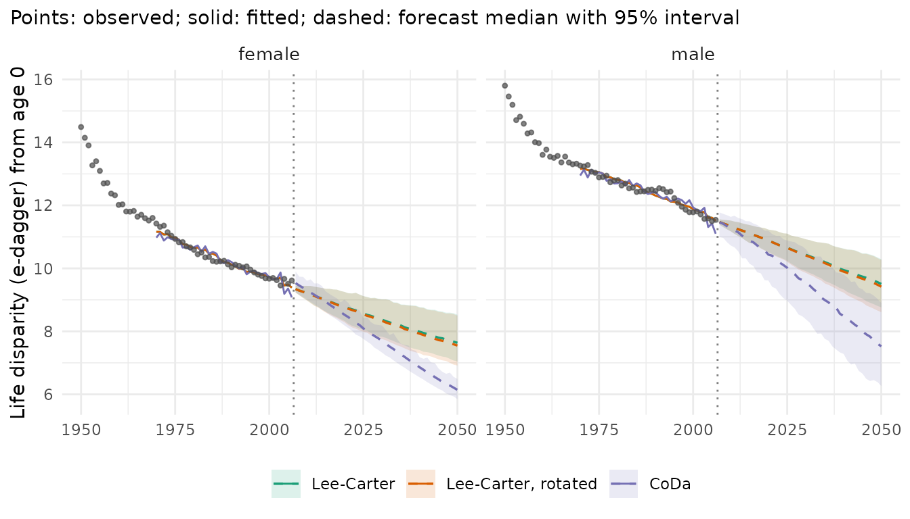
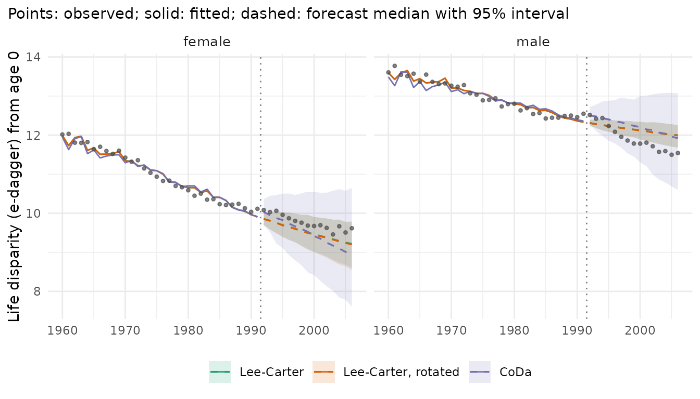

Life expectancy is the mean age at death of a period life table. Two
populations with the same life expectancy can differ in how unequal
their lifespans are: in one most people die at similar ages, in the
other many die young and many very old. Indices of lifespan variation
measure this spread. lifespan_variation() computes them
from observed rates (with Poisson intervals) and from forecast draws
(path by path, like life_expectancy()). The measures follow
the R package LifeIneq (van Raalte, Riffe and Dudel 2024):
| Measure | measure |
Meaning |
|---|---|---|
| Life disparity | "edagger" |
average remaining life expectancy lost at death, in years (Vaupel 1986) |
| Life-table entropy | "entropy" |
e-dagger divided by life expectancy (Keyfitz 1977; Goldman and Lord 1986) |
| Gini coefficient | "gini" |
mean absolute difference between two ages at death, relative to the mean (Shkolnikov, Andreev and Begun 2003) |
| Standard deviation, variance, coefficient of variation |
"sd", "var", "cv"
|
spread of the age at death around its mean |
| Interquartile range | "iqr" |
years between the ages by which a quarter and three quarters have died |
All are computed for the survivors to an age at (default
the first age): at = 65 measures the variation of the ages
at death above 65.
Observed lifespan variation in France
Women and men in France, 1950-2006, from the Human Mortality Database (via the demography package), in single years of age to 100+:
library(mortensor)
library(data.table)
fr <- as_mt_data(demography::fr.mort)
x <- mt_regroup(mt_subset(fr, periods = c(1950, 2006)), age = 0:100)
lv <- lifespan_variation(x, measure = c("edagger", "gini", "sd"))
lv[period %in% c(1950, 1975, 2006), list(sex, period, measure, mean, q0.025, q0.975)]
#> sex period measure mean q0.025 q0.975
#> <char> <num> <char> <num> <num> <num>
#> 1: female 1950 edagger 14.48901802 14.43759796 14.53980455
#> 2: female 1975 edagger 10.93527140 10.90016107 10.97485945
#> 3: female 2006 edagger 9.61796420 9.57733046 9.65053932
#> 4: male 1950 edagger 15.80116829 15.75533967 15.84824937
#> 5: male 1975 edagger 12.89052615 12.84818422 12.93178081
#> 6: male 2006 edagger 11.54213382 11.50857050 11.57921372
#> 7: female 1950 gini 0.15765978 0.15695199 0.15837964
#> 8: female 1975 gini 0.10377954 0.10336546 0.10426511
#> 9: female 2006 gini 0.08243246 0.08206303 0.08275584
#> 10: male 1950 gini 0.18511625 0.18438466 0.18585481
#> 11: male 1975 gini 0.13375868 0.13320337 0.13432691
#> 12: male 2006 gini 0.10707010 0.10669301 0.10746077
#> 13: female 1950 sd 22.09717810 22.02210120 22.16975497
#> 14: female 1975 sd 16.35642086 16.29327819 16.43593681
#> 15: female 2006 sd 13.93768953 13.86875567 13.99526408
#> 16: male 1950 sd 22.85119865 22.79330458 22.91015475
#> 17: male 1975 sd 17.83002918 17.76886406 17.89445866
#> 18: male 2006 sd 15.77479171 15.71858386 15.83637820The intervals are narrow, because the deaths of a whole country leave little random variation. All three measures fell by a quarter to a half: the ages at death became more similar as deaths in childhood and middle age became rare. e-dagger of women fell from 14.5 to 9.6 years, while their life expectancy rose from 69 to 84 years. Across countries and years, high life expectancy and low life disparity go together (Vaupel, Zhang and van Raalte 2011).
Above age 65 the picture differs:
lv65 <- lifespan_variation(x, measure = "edagger", at = 65)
lv65[period %in% c(1950, 1975, 2006), list(sex, period, mean)]
#> sex period mean
#> <char> <num> <num>
#> 1: female 1950 6.866434
#> 2: female 1975 6.948235
#> 3: female 2006 7.138844
#> 4: male 1950 6.575271
#> 5: male 1975 6.978772
#> 6: male 2006 7.517069e-dagger at 65 rose slightly: the decline of mortality at old ages spread the ages at death above 65 further out, so the fall of lifespan variation at birth came from deaths before 65.
The open age interval
The life table assumes a constant death rate in the open age interval, while the death rate keeps rising with age. The ages at death in that interval are therefore spread too widely, and every measure depends on where the open interval starts:
open_at <- function(o) {
r <- lifespan_variation(mt_regroup(x, age = 0:o), measure = c("edagger", "gini", "sd", "iqr"))
r[period == 2006, list(sex, measure, open = paste0(o, "+"), value = mean)]
}
dcast(rbindlist(lapply(c(85, 90, 95, 100), open_at)), sex + measure ~ open, value.var = "value")
#> Key: <sex, measure>
#> sex measure 100+ 85+ 90+ 95+
#> <char> <char> <num> <num> <num> <num>
#> 1: female edagger 9.61796420 11.7453299 10.22568749 9.77491776
#> 2: female gini 0.08243246 0.0724665 0.07914172 0.08213527
#> 3: female iqr 13.44660072 12.2966754 12.71691174 13.44339330
#> 4: female sd 13.93768953 13.6268146 13.78205434 13.91529084
#> 5: male edagger 11.54213382 12.5239285 11.74989108 11.58373603
#> 6: male gini 0.10707010 0.1042746 0.10640110 0.10706179
#> 7: male iqr 18.00869613 17.1892414 18.01023500 18.00692767
#> 8: male sd 15.77479171 15.7138475 15.72797432 15.77179271For women in 2006, e-dagger is 2.1 years higher with an open interval from 85 than with single years to 100+, and the Gini coefficient and the interquartile range are lower; from 95 the differences are small. Data that end at 85+ or 90+ (as many official tables) give biased levels of lifespan variation, more so in recent years with many deaths above these ages. Compare measures only between tables with the same open age.
Closing the open interval with a hazard law
life_table(open = ) (and the functions that build life
tables, such as life_expectancy()) can replace the constant
death rate of the open interval by a hazard law fitted by maximum
likelihood to the last k single years below it (10 by
default): the Gompertz and Kannisto laws (Thatcher, Kannisto and Vaupel
1998), the further laws that Feehan (2018) compares (Makeham, Weibull,
Beard, log-quadratic, logistic, Perks, Lynch-Brown), or for each table
the law with the lowest AIC ("aic", with observed
exposures). Which law extrapolates well is a question of the data.
mt_open_check() follows the design of Thatcher et al.: it
fits the laws below a cut age and scores their predicted probabilities
of dying against the observed deaths above it. French women, deaths and
exposures of 1997-2006 pooled, the laws fitted at 80-89 and scored at
90-109:
xw <- mt_regroup(mt_subset(fr, sex == "female", periods = c(1997, 2006)), period = 1997)
chk <- mt_open_check(xw, cut = 90)
chk[, list(law, n_par, delta_aic, nll, chisq, n_ages, rank)]
#> law n_par delta_aic nll chisq n_ages rank
#> <char> <int> <num> <num> <num> <num> <int>
#> 1: gompertz 2 27.454234 1830902 29228.802 20 9
#> 2: kannisto 2 2.161689 1817076 1615.607 20 1
#> 3: makeham 3 29.454234 1830902 29228.802 20 8
#> 4: weibull 2 6.198313 1821039 9435.503 20 5
#> 5: beard 3 3.995140 1817411 2273.142 20 2
#> 6: logquad 3 6.699201 1821564 10464.439 20 6
#> 7: logistic 4 0.000000 1818356 4334.472 20 3
#> 8: perks 4 0.000000 1818356 4334.472 20 4
#> 9: lynch_brown 4 1.795319 1828854 27329.802 20 7nll is minus the binomial log-likelihood of the deaths
at 90-109 and chisq the sum of the chi-squared statistics
over the n_ages test ages, about n_ages for a
correct law and accurate data. The Kannisto law extrapolates best,
followed by Beard; all laws stay far above the noise level, because
720,000 deaths at these ages make small deviations visible. The Gompertz
and Makeham laws overestimate the probabilities of dying above 90 by
far, the Kannisto law slightly. The AIC of the fits at 80-89
(delta_aic) prefers the logistic and Perks laws, which
underestimate them: a law that fits best below the cut need not
extrapolate best. Thatcher et al. saw the same for their female data,
where the Kannisto law, a special case of the logistic law, extrapolated
better.
For French women and men in 2006, life expectancy at 80 from single years to 100+ and from tables ending at 85+, with the constant rate and with a Kannisto law fitted at 75-84:
x06 <- mt_subset(x, periods = c(2006, 2006))
e80 <- function(o, open) {
e <- life_expectancy(mt_regroup(x06, age = 0:o), at = 80, open = open)
e[, list(sex, table = paste0(o, "+, ", open), e80 = mean)]
}
dcast(rbindlist(list(e80(100, "reciprocal"), e80(85, "reciprocal"), e80(85, "kannisto"))), sex ~ table,
value.var = "e80")
#> Key: <sex>
#> sex 100+, reciprocal 85+, kannisto 85+, reciprocal
#> <char> <num> <num> <num>
#> 1: female 10.483002 10.668498 10.836020
#> 2: male 8.254839 8.422116 8.545933The Kannisto closure about halves the overestimate of the 85+ table (from 0.35 to 0.19 years for women, from 0.29 to 0.17 years for men). The measures of lifespan variation use the closure only for the time lived in the open interval: they still place all its deaths at one age.
Forecasts
Forecasts of the rates imply forecasts of lifespan variation. Models with the same life expectancy can imply different variation, because they differ in the ages at which mortality falls. Three models fitted to 1970-2006:
-
Lee-Carter (
lee_carter()): each age declines at a fixed relative paceb(x); -
rotated Lee-Carter
(
lee_carter(rotate = TRUE)): as life expectancy rises above 80, the decline moves to older ages (Li, Lee and Gerland 2013); life expectancy at birth stays that of Lee-Carter; -
CoDa (
coda()): the Lee-Carter model of the life-table distribution of deaths, which forecasts the shape of the age-at-death distribution directly (Oeppen 2008; Bergeron-Boucher et al. 2017).
xf <- mt_subset(x, periods = c(1970, 2006))
specs <- list("Lee-Carter" = lee_carter(), "Lee-Carter, rotated" = lee_carter(rotate = TRUE), "CoDa" = coda())
fc <- lapply(specs, function(s) mt_forecast(mt_fit(s, xf), to = 2050, n_draws = 500, seed = 1))
mt_compare_forecasts(fc, periods = 2050)
#> Key: <label, period>
#> label period Lee-Carter Lee-Carter, rotated CoDa
#> <char> <num> <char> <char> <char>
#> 1: female 2050 91.4 (87.8-94.2) 91.4 (87.8-94.2) 94.6 (93.7-95.3)
#> 2: male 2050 85.1 (82.3-87.6) 85.1 (82.3-87.6) 89.4 (85.9-92.6)
mt_compare_forecasts(fc, quantity = "lifespan_variation", periods = 2050, digits = 2)
#> Key: <label, period>
#> label period Lee-Carter Lee-Carter, rotated CoDa
#> <char> <num> <char> <char> <char>
#> 1: female 2050 7.64 (7.05-8.53) 7.55 (6.92-8.50) 6.14 (5.85-6.49)
#> 2: male 2050 9.51 (8.76-10.29) 9.42 (8.61-10.27) 7.52 (6.26-8.90)
mt_plot_compare(fc, quantity = "lifespan_variation", data = x)
- Lee-Carter continues the decline of e-dagger at a slower pace than in the past, to 7.6 years for women and 9.5 for men in 2050.
- The rotation lowers e-dagger only slightly here. French women reached a life expectancy of 80 in 1986, so the rotation is active from the jump-off. Their decline above 65 was already faster than the ultimate pattern assumes, so the rotation moves decline mostly from childhood, where few deaths are left, to ages 15-64; that changes the spread of the ages at death little. For men it starts when their forecast life expectancy passes 80, after 2015.
- CoDa forecasts a higher life expectancy (94.6 years for women and 89.4 for men in 2050) and a faster fall of e-dagger (to 6.14 years for women and 7.5 for men). It extrapolates the past concentration of deaths at old ages directly. For men its intervals are wider than those of Lee-Carter. For women they narrow towards the end of the forecast and are narrower than those of Lee-Carter in 2050.
Lee-Carter starts from the fitted rates of 2006 (the default
jump_off = "fitted"), so its first year lies below the
observed e-dagger; CoDa starts from the observed deaths.
Gaps between strata work path by path, as for life expectancy:
mt_contrast(fc[["CoDa"]], var = "sex", ref = "female", quantity = "lifespan_variation")[
period %in% c(2030, 2050), list(level, ref, period, q0.025, q0.5, q0.975)]
#> level ref period q0.025 q0.5 q0.975
#> <char> <char> <num> <num> <num> <num>
#> 1: male female 2030 0.6644229 1.874447 3.025238
#> 2: male female 2050 0.1090644 1.436206 2.815577Which forecast was right in the past?
The same three models fitted to 1960-1991 forecast the years 1992-2006, which can be compared with the observed e-dagger:
xp <- mt_subset(x, periods = c(1960, 1991))
fc_past <- lapply(specs, function(s) mt_forecast(mt_fit(s, xp), to = 2006, n_draws = 500, seed = 1))
mt_plot_compare(fc_past, quantity = "lifespan_variation", data = x, periods = c(1960, 2006))
obs <- lifespan_variation(x, "edagger")[period == 2006, list(label = sex, observed = mean)]
merge(obs, mt_compare_forecasts(fc_past, quantity = "lifespan_variation", periods = 2006, digits = 2),
by = "label")
#> Key: <label>
#> label observed period Lee-Carter Lee-Carter, rotated
#> <char> <num> <num> <char> <char>
#> 1: female 9.617964 2006 9.22 (8.60-9.79) 9.20 (8.55-9.79)
#> 2: male 11.542134 2006 11.99 (11.68-12.26) 11.99 (11.68-12.26)
#> CoDa
#> <char>
#> 1: 8.96 (8.49-9.44)
#> 2: 12.06 (11.64-12.36)For women, all three forecasts of 2006 were below the observed 9.6 years (Lee-Carter 9.2, CoDa 9.0); the intervals of Lee-Carter contain it, that of CoDa (8.49-9.44) does not. For men, all were above the observed 11.5 years (Lee-Carter 11.99, CoDa 12.06), and none of the intervals contains it. The rotation changed the forecast for women by 0.02 years and not at all for men, whose life expectancy stayed below 80.
One period of one country is a small test. mt_backtest()
scores the forecast rates and life expectancy over many origins; for
lifespan variation, repeat the comparison above from several
origins.
References
Bergeron-Boucher M-P, Canudas-Romo V, Oeppen J, Vaupel JW (2017). Coherent forecasts of mortality with compositional data analysis. Demographic Research 37(17): 527-566.
Feehan DM (2018). Separating the signal from the noise: evidence for deceleration in old-age death rates. Demography 55(6): 2025-2044.
Goldman N, Lord G (1986). A new look at entropy and the life table. Demography 23(2): 275-282.
Keyfitz N (1977). Mortality comparisons; the male-female ratio. In Applied Mathematical Demography, 54-76. John Wiley and Sons.
Li N, Lee R, Gerland P (2013). Extending the Lee-Carter method to model the rotation of age patterns of mortality decline for long-term projections. Demography 50(6): 2037-2051.
Oeppen J (2008). Coherent forecasting of multiple-decrement life tables: a test using Japanese cause of death data. CODAWORK’08, Universitat de Girona.
Shkolnikov VM, Andreev EM, Begun AZ (2003). Gini coefficient as a life table function: computation from discrete data, decomposition of differences and empirical examples. Demographic Research 8: 305-358.
Thatcher AR, Kannisto V, Vaupel JW (1998). The Force of Mortality at Ages 80 to 120. Odense University Press.
van Raalte A, Riffe T, Dudel C (2024). LifeIneq: Calculate indices of lifespan variation. R package version 00.04.09. https://github.com/alysonvanraalte/LifeIneq
Vaupel JW (1986). How change in age-specific mortality affects life expectancy. Population Studies 40(1): 147-157.
Vaupel JW, Zhang Z, van Raalte AA (2011). Life expectancy and disparity: an international comparison of life table data. BMJ Open 1(1): e000128. doi:10.1136/bmjopen-2011-000128.